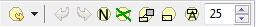
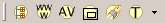

Eclipse-supported software like Pliny has potentially more than
one area for Toolbars, and there are indeed three in the screen figure shown in
the previous section.
- The main tool bar area, as shown in the screen-shot above, looks like
this:

In the toolbar you can see a set of icons divided into two areas.
Think of the Icons as buttons -- they are clickable and provide ways to get
Pliny and/or Eclipse to carry out some operation for you. The main toolbar
provides a place for icons/tools of a general purpose nature.
- In addition to the main tool bar, tool bars can be provided by
Eclipse views, and the tool icons then appear in the view's pane. You can see
an example of this in the little tool bar that appears in the Resource
Explorer's pane in the screen snapshot we showed earlier:
Think of these icons as providing functions specifically useful to
the Resource Explorer view. See a description of these buttons in the section
on the Resource Explorer.
- Finally, most of Pliny's editors have a toolbar area at or near the
top of their display area. You can see an example of this inside the Vico
Frontispiece just below its tab, and to the right:

Like those that appear with views, these icons provide functions
needed for the particular editor. Since we see the image annotator here, we can
find a description of this particular set of icons in the section on the
Image Annotator.
Toolbars in Eclipse are sometimes called Action Bars because they
provide icons that, when clicked, perform actions. In the main toolbar
you can see that the icons are grouped into two areas, at the left and right
end of the toolbar area (with a field called Quick Access which does
nothing in Pliny between them). The two groups are generically called Action
Sets, and as mentioned before, the contents of any particular action set,
and what action sets are shown to you will depend upon what functions you are
doing with Eclipse. The two action sets showing in the main toolbar are:
- Eclipse's Navigation Toolbar:
provides a set of navigation buttons
that work in ways similar to your web browser's "back" and "forward" buttons.
In the context of Pliny, they operate by allowing you to view Pliny resources
that you have worked on earlier in the current session. Note the two little
down-pointing arrows (
 ). When this kind
of symbol is shown beside an icon it means that there is a drop-down menu
available. Show the drop-down menu by clicking on the little arrow. In the case
of the one beside the "back" button, Eclipse will show you a list of all the
materials you have recently seen in this session.
). When this kind
of symbol is shown beside an icon it means that there is a drop-down menu
available. Show the drop-down menu by clicking on the little arrow. In the case
of the one beside the "back" button, Eclipse will show you a list of all the
materials you have recently seen in this session.
- Pliny's Basic Toolbar:
 provides a basic way to start up
various Pliny operations. There are five icons here, and they do the following:
 : The
Resource Explorer button opens Pliny's Resource Explorer view. On the screen shown
above it is already open, but if it was not visible pushing this icon would
display it for you.
: The
Resource Explorer button opens Pliny's Resource Explorer view. On the screen shown
above it is already open, but if it was not visible pushing this icon would
display it for you.
 : The Pliny
Browser button opens Pliny's embedded Web browser. The web browser
is not showing in the screen shown above. The web browser displays your
conventional web browser (for example, Internet Explorer or FireFox) in an
Eclipse Editor pane, and allows you to use web pages as resources for Pliny's
note taking or annotation. There is more about this in the section on
Pliny's Web Browser, and the tutorial
Using Pliny with Web-based materials.
: The Pliny
Browser button opens Pliny's embedded Web browser. The web browser
is not showing in the screen shown above. The web browser displays your
conventional web browser (for example, Internet Explorer or FireFox) in an
Eclipse Editor pane, and allows you to use web pages as resources for Pliny's
note taking or annotation. There is more about this in the section on
Pliny's Web Browser, and the tutorial
Using Pliny with Web-based materials.
- : The
Annotation View button opens Pliny's Annotation View. If you stick to
the tools provided within Pliny (or other Pliny-aware applications) to work
with your data you will not need the Annotation View. Indeed, if you are using
Pliny's stand-alone version you probably won't need to use the Annotation View
at all, since only Pliny-aware tools are available. However, the view provides
a way to attach Pliny-managed notes and annotations to materials being
displayed by editors belonging to Eclipse applications that are not
Pliny-aware. There is more about the annotation view in the
Annotation View section.
- : The
Containment View button opens Pliny's Containment View which can be used
to help you sort out containment-type relationships between resources. There is
more discussion about the containment view in theContainment View Section.
- : The Note
Search View button opens Pliny's Note Search View which can be used to
search for notes that contain words that you have used in their content. There
is more about the note search view in the Note
Search View Section.
- : The Type Manager
View button opens Pliny's Type Manager View which can be used to manage the
Pliny's types. The pull-down indicator
that follows the button belongs with it and shows that there is a pull-down
menu attached to this item. There is more about the Type Manager, the
associated pull-down menu and about types in the
Type Manager View Section.